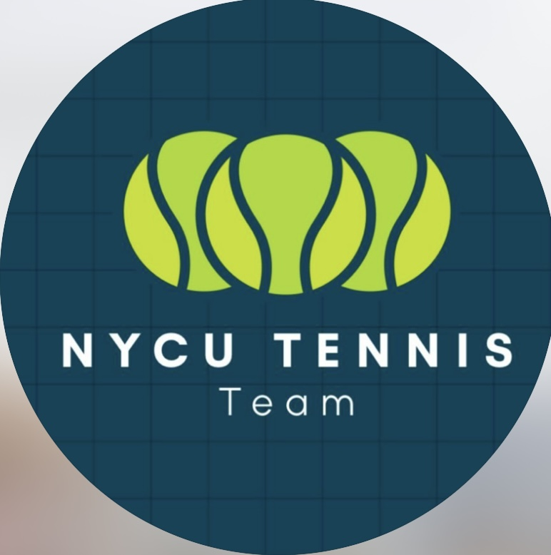

透過視覺設計與互動遊戲的結合，讓運動項目受到更多的支持與討論，並且希望能讓一些在台灣相對冷門的賽事獲得目光。

在114學年度創立並經營交大網球隊Instagram帳號，統籌內容企劃、影片製作與圖文設計，成功提升球隊在校的招生與凝聚力。其中策劃、拍攝與剪輯的畢業影片，迄今累積近5k次觀看，成為社群中最具影響力的作品之一。
與公益組織「舊鞋救命」合作，製作短影音與社群圖文貼文，聚焦正確捐物宣導與理念推廣，結合創意敘事與多媒體設計，提升受眾參與度與品牌影響力